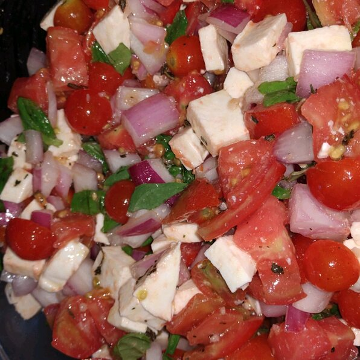

Bruschetta Salad

This salad tastes just like bruschetta, but in a bowl.
If you like bruschetta, you will love this salad!
Ingredients
- 3 Roma tomatoes, sliced into rounds
- ¼ pound mozzarella cheese, cut into bite-size cubes
- ½ cup crushed garlic-flavored bagel chips
- ¼ cup torn fresh basil leaves
- ¼ red onion, chopped
- 2 tablespoons light olive oil
- 1 ½ tablespoons red wine vinegar
- 1 large cloves garlic, minced
- ½ tablespoon dried basil
- salt and ground black pepper to taste
Steps
- Combine tomatoes, mozzarella cheese, bagel chips,
basil, red onion, olive oil, red wine vinegar, garlic, basil,
salt, and black pepper together in a bowl.
- Toss until evenly combined.
- Refrigerate until chilled, 15 to 30 minutes.